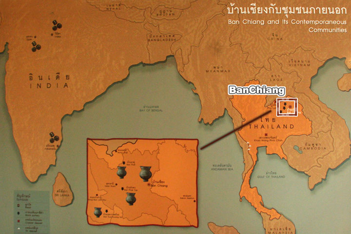
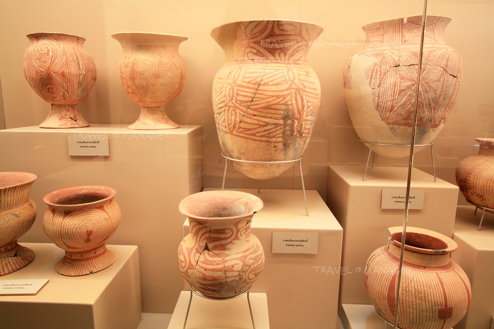

พิพิธภัณฑ์และจุดเยี่ยมชมสำคัญ

แผนที่
ตำแหน่งที่ตั้งบ้านเชียง
บ้านเชียงตั้งอยู่ในจังหวัดอุดรธานี ภาคตะวันออกเฉียงเหนือของประเทศไทย

โบราณวัตถุ
เครื่องปั้นดินเผาเขียนสี
สังเกตลวดลายสีแดงบนพื้นดินเผา เช่น ลายก้นหอย เส้นคาด และลายเรขาคณิต

พิพิธภัณฑ์
พิพิธภัณฑสถานแห่งชาติบ้านเชียง
เริ่มต้นที่นี่เพื่อดูนิทรรศการและทำความเข้าใจบริบท ก่อนออกไปสำรวจชุมชน